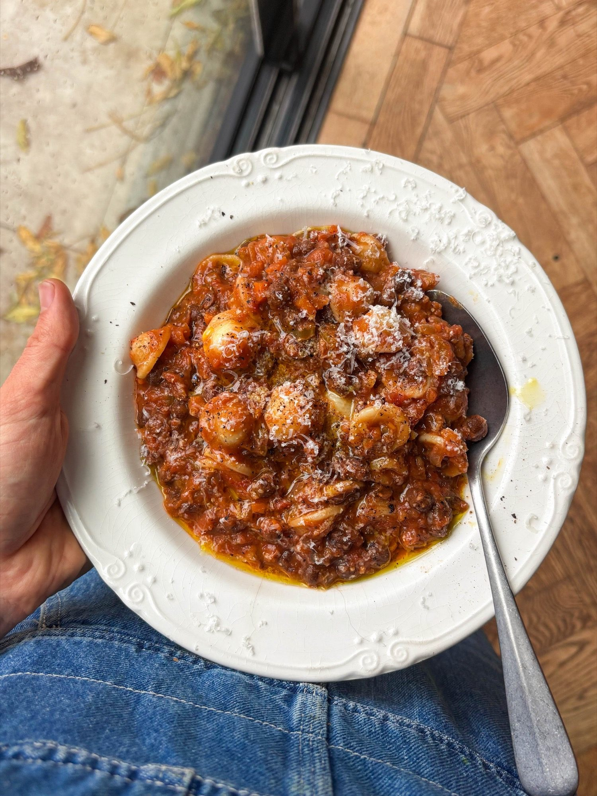

Carlin Pea Ragu
A vegetarian ragu of carlin peas simmered with soffritto, tomatoes and Marmite, stirred through orecchiette.

Ingredients
To serve
Method
- Heat 3 tbsp of the 4 tbsp olive oil in a large pan over a medium heat.
- Add the 1 onion, 1 stick of celery and 1 large carrot with a pinch of salt.
- Cook for 10-12 minutes, stirring often, until softened and lightly golden.
- Add the 1 tbsp tomato purée with a splash of water and cook for 2 minutes, until it darkens in colour.
- Stir in the 3 garlic cloves and 1 tsp mixed Italian herbs and cook for 1-2 minutes, until fragrant.
- Add the 570g jar of carlin peas with their bean stock, the 400g tin of chopped tomatoes and the 1 tsp Marmite, which gives an umami boost, and stir to combine.
- Swill a splash of the 200ml vegetable stock around the empty tomato tin to rinse it out, then add it to the pan along with the rest of the stock.
- Simmer for 8-10 minutes, until slightly reduced and thickened.
- Put the 200g orecchiette on to boil in salted water.
- Gently mash some of the carlin peas with the back of a spoon, for a thick, meaty, ragu-like texture.
- Add the 1 tbsp red wine vinegar, stir well and simmer for another 5-8 minutes, until thick and saucy.
- Stir through the 45g Parmesan and season with salt and plenty of cracked black pepper.
- Drain the pasta, reserving a little of the cooking water.
- Add the pasta to the ragu and stir so it is fully coated, loosening with a splash of the pasta water if necessary.
- Spoon into bowls and top with the parsley, a drizzle of the remaining olive oil and extra Parmesan.
Notes
- Orecchiette works particularly well because its cup shape holds the peas; conchiglie is a good alternative.
- A good one for batch cooking — the ragu keeps through the week and is also excellent over buttery polenta.
- Grated cheddar works in place of the Parmesan to serve. Use a vegetarian alternative to the Parmesan if you need to.
Source: https://boldbeanco.com/blogs/beanspo-recipes/carlin-pea-ragu